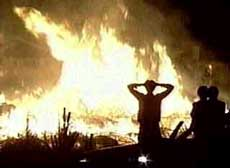

|
 $50 million
San Diego apartment arson |
|
HOME ISSUES OPPOSITION PROJECTS DEFENDERS WISE USE BOOKSTORE ARCHIVE |
The Center View: Earth Liberation Front
commits most dangerous arson yet
San Diego apartment arson forces 400 to evacuate homes
August 1 through 4, 2003
The FBI is investigating the Earth Liberation Front in connection with an August 1 arson fire that destroyed a five-story 206-unit condominium project under construction in University City, a district of San Diego, California. The La Jolla Crossroads complex was planned for 1,500 housing units, including low-income and market-rate rental apartments, and condominiums for sale.
More than 400 nearby residents were reported evacuated from their homes to escape the flames and smoke that billowed over a hundred feet.
The new housing units were to be built next to a 165,000-square-foot research center, just south of La Jolla Village Drive and west of Interstate 805. Stuart Posnock, of the development company Garden Communities, said the center would provide about 650 jobs.
A banner reading "If you build it, we will burn it, the ELFs are mad," was found at the crime scene, and an e-mail sent to The San Diego Union-Tribune the day of the arson said the banner "is a legitimate claim of responsibility by the Earth Liberation Front."
Damage has been
set at more than $50 million, more than doubling the dollar loss attributed to
ELF crimes over the past decade, which stood at a composite total of $45 million
before the San Diego arson, according to the FBI.
But the San Diego apartment arson represents a new level in threat to human life
from ELF terrorism. The worst previous ELF arson was the $12 million 1998 ski
resort fire in Vail, Colorado, at a relatively unpopulated mountainous site. ELF
supporters said the crime was to protect lynx habitat, even though a lynx had
not been sighted in the region for more than 20 years.
The urban arson in teeming San Diego is a stark departure from past ELF felonies, and put thousands of nearby people at risk. The murderous rhetoric of former ELF spokesman Craig Rosebraugh, who advocates revolutionary political violence including assassination, appears to have influenced the San Diego perpetrators to risk the lives of so many people. A lecture Rosebraugh gave at a Portland, Oregon bookstore earlier this year has been released on audio CD with the title, "THE LOGIC OF POLITICAL VIOLENCE: Lessons in Reform and Revolution."
Jan Caldwell, an
FBI spokeswoman, said law enforcement officers are interviewing hundreds of
people evacuated from their homes.
"I think the American people are tired of being terrorized," Caldwell told
reporters. "Someone out there knows some information."
One of those who may "know some information" is convicted felon Rodney Coronado, an ELF spokesman. Only hours after the arson, Coronado spoke a few miles away at an animal-rights event in Hillcrest Center, which bills itself as "serving the San Diego lesbian, gay, bisexual and transgender community."
Coronado was sentenced to 57 months in federal prison for the 1992 arson of a mink research lab at Michigan State University. He was wanted for crimes in at least five other states, including other university arsons and an act of pure thuggery: he stole and destroyed a priceless notebook from the Little Bighorn Museum because it had once belonged to one of Custer's army troopers it was one of the few personal belongings ever recovered from the massacre (Coronado is part Yaqui Indian on his mother's side).
Coronado was also sentenced to 3 years probation, which ended in 2002, and ordered to pay $2 million in restitution, which, of course, he has not paid.
This convicted felon spoke to numerous media outlets about the San Diego arson. Here is an assortment of his remarks from media interviews:
|
"I disagree with the FBI's declaration that ELF is a terrorist organization. I consider a terrorist to be somebody who kills people." (The Government Sentencing Memorandum that sent Coronado to prison had a more realistic concept: "A terrorist combines violence and threats so that those that disagree with him are silenced, either because they have been victimized by violence or because they fear being victimized.") "The fire was a message. The first intent is obviously to cause economic hardship to companies, individuals responsible for destroying the environment." (Setting a raging apartment fire in what Coronado called "an environmentally sensitive canyon" in order to save the canyon calls to mind the ironic bumper-sticker, "Honk if you love peace and quiet.") But we get closer to the heart of ELF motivation in the next Coronado quote: "I would rather see an apartment complex burn to the ground than developers making money off the environment." (Visceral anti-corporate, anti-capitalist hatred is universal among ELF supporters.) "Regardless of how people feel about these actions, they do help bring the issue to the public's attention and maybe when it's enough in the public's attention that's when governments will be called upon to do something about it." (Using violence to coerce government policy has long been a key element of legal definitions of terrorism.) "ELF is in business because groups like the Sierra Club have not been able to get the job done. There's a whole new generation of environmentalists out there who don't have the patience that older people did and who have to work within the system." (There's also a whole new generation of law-abiding citizens out there who don't have the patience with terrorists that older people did and will turn in ELF criminals just like the young Indian woman who turned in Coronado while he was hiding out at the Yaqui Indian Reservation in Tucson, Arizona.) |
Julie Meier
Wright, president of the San Diego Regional Economic Development Corp. and a
University City resident, called the ELF "domestic terrorists," a term also used
by the FBI.
"It is awful that people are going to resort to this kind of thing because they
don't like something," she told a reporter. "I think it's really a shame."
Gary Frey, a 42-year-old Marine, who was among the hundreds evacuated from the
adjacent Villas de Renaissance project, looked at the complex remains with his
wife, Priscilla, and children, Andrew, 4, and Rachel, 6.
"Terrorism is terrorism," Frey told a San Diego Union-Tribune reporter. "It's a
terrorist act pure and simple in my mind. ... Don't accept it. You can't yield
to their strong-arming. Rebuild it."
RETURN TO CENTER FOR THE DEFENSE OF FREE ENTERPRISE HOME PAGE
{kind=link}